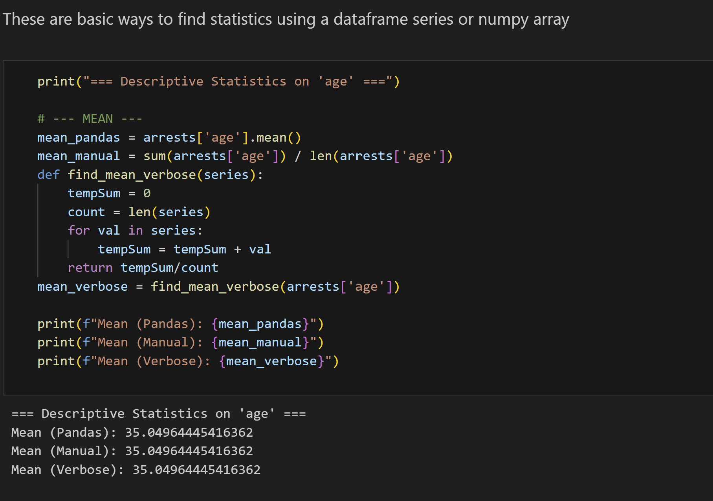
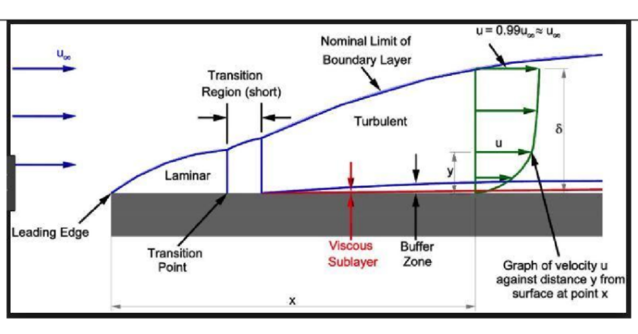

Teaching
I enjoy the challenge of communicating complex subjects; I have taught six undergraduate courses and am currently teaching a graduate course

Overview
When trying to explain complex topics to others, I find that I learn the topics I am trying to teach better myself. Starting my first year at Yale, I wrote Science Olympiad tests on materials science, chemistry, and ecology to build this skill.
Starting my sophomore year, I started working as an Undergraduate Learning Advisor (ULA) for many classes, a role that I continued the rest of my college experience.
Courses Taught
- MATH 230: Proof-based Linear Algebra (Yale)
- MATH 231: Proof-based Vector Calculus (Yale)
- MENG 211: Thermodynamics (Yale)
- MENG 361: Fluid Dynamics (Yale)
- MENG 383: Dynamics (Yale)
- MENG 469: Aerodynamics (Yale)
- DEVP 209: Decision Analysis, Modeling And Quantitative Methods (UC Berkeley)
Teaching Experience
For every class, I graded papers, held office hours, and created review materials for the midterms and finals.
For Dynamics, I held specially dedicated problem sessions where I applied materials covered in the course work to make sure students understood how to do their problem sets.
In my last semester teaching Aerodynamics, I did all of these other tasks, but also had a special opportunity to teach multiple lectures while the professor travelled for conferences. In the first of these lectures, I summarized fluid dynamics principles and in the second one I presented on Boundary Layer Theory.
UC Berkeley
Now as a student at UC Berkeley, I am working as a Graduate Student Instructor (GSI) for a brand new course, DEVP 209: Decision Analysis, Modeling And Quantitative Methods. This quantitative course for graduate students is designed to teach coding, statistics, modelling, and econometrics.
As this course is brand new, I spent summer 2025 working with a professor to create educational exercises and problem sets. This is the first time I have helped design a syllabus. I am now pursuing a Certificate in Teaching and Learning in Higher Education, which requires an additional 2 credit elective course.
Gallery

Example code from coursework

Boundary Layer Theory
Skills & Technologies
- Python
- Fluid Dynamics
- Mathematics
- Communication
- Writing